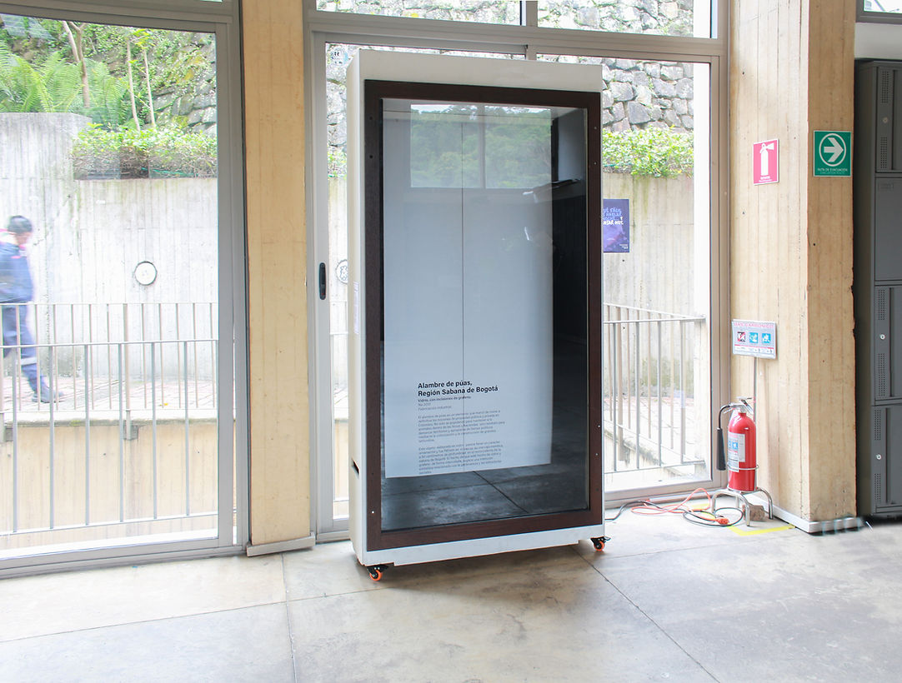
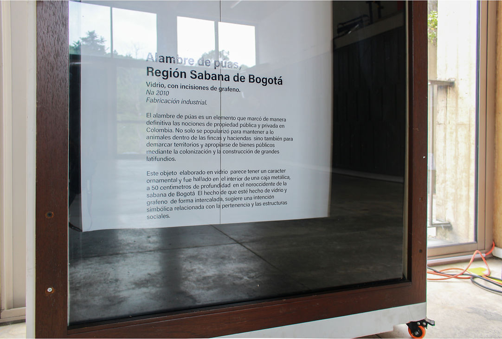
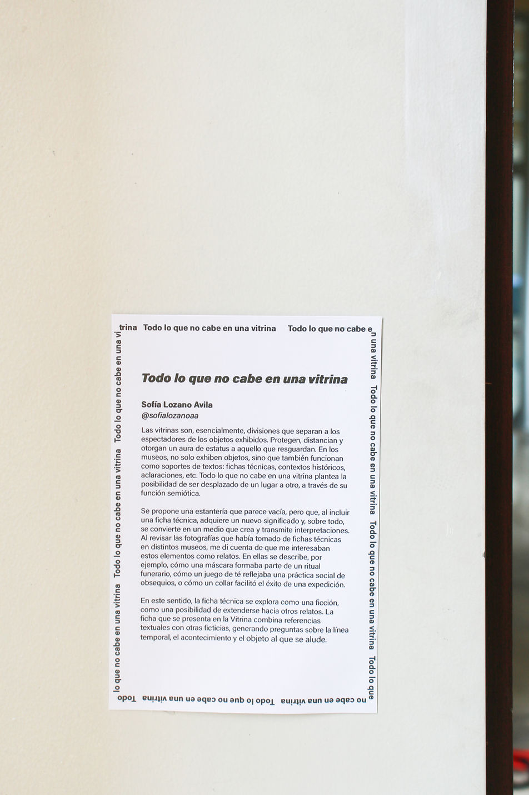

todo lo que no cabe en una vitrina
23 de Abril - 23 de Mayo del 2025
Universidad de Los Andes - Bogotá.
Proyecto ganador de la convocatoria “La vitrina”.
Las vitrinas son esencialmente divisiones que separan a los espectadores de los objetos exhibidos. Protegen, distancian y otorgan un aura de estatus a lo que resguardan. En los museos, las vitrinas no solo exhiben objetos, sino que también funcionan como soportes de textos: fichas técnicas, contextos históricos, aclaraciones, etc. Si bien, La Vitrina es un espacio de experimentación móvil, me pareció una buena oportunidad para desplazar un lugar a otro, a través de su función semiótica.
Este proyecto plantea una estantería que parece vacía, pero que, al incluir una ficha técnica, adquiere un nuevo significado, y sobre todo se convierte en un medio que crea y transmite interpretaciones. El proyecto Todo lo que no cabe en una vitrina consiste en un texto en plotter de corte pegado al vidrio en la parte exterior. Este texto está basado en fichas técnicas que vi en el Museo Nacional. Al revisar fotos en mi celular, las fichas y descripciones que me llamaron la atención iban más allá de la simple referencia al objeto (fecha, año, etc), complementándose con un relato. En ellas, se describe, por ejemplo, cómo una máscara formaba parte de un ritual de la muerte, cómo un juego de té reflejaba una práctica social de obsequios o cómo un collar facilitó el éxito de una expedición.
Veo estas fichas como ficciones, como una posibilidad de extenderse a otros relatos. Por eso, la ficha final combinará referencias textuales, con otras ficticias, generando preguntas sobre la línea temporal, el acontecimiento, el objeto y el lugar al cual se alude.

Todo lo que no cabe en una vitrina. Instalación. Vinilo, plotter de corte, vitrina. Dimensiones variables. 2025

Todo lo que no cabe en una vitrina. Instalación. Vinilo, plotter de corte, vitrina. Dimensiones variables. 2025

Texto de sala.